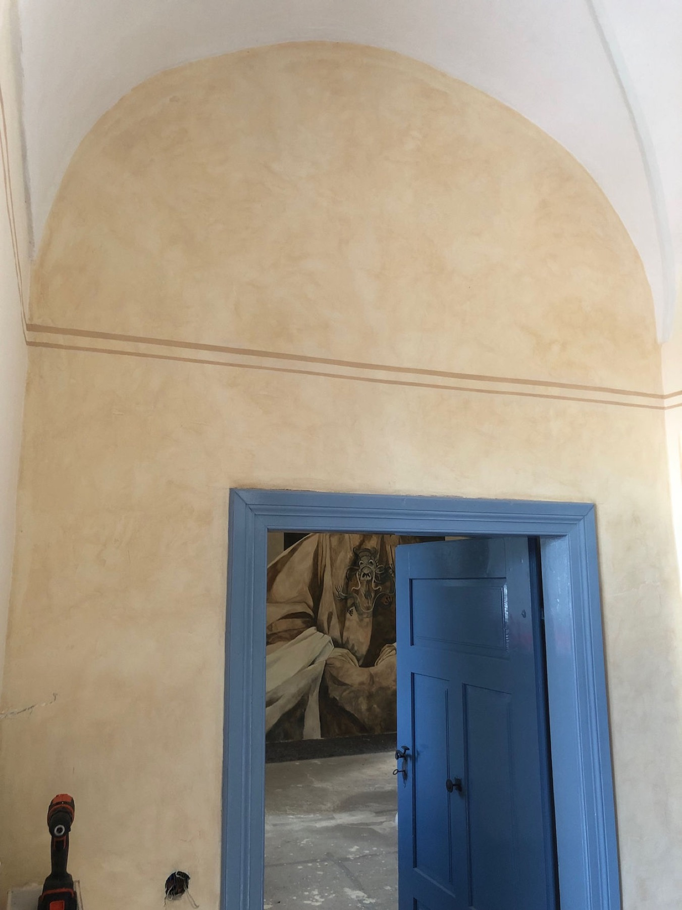
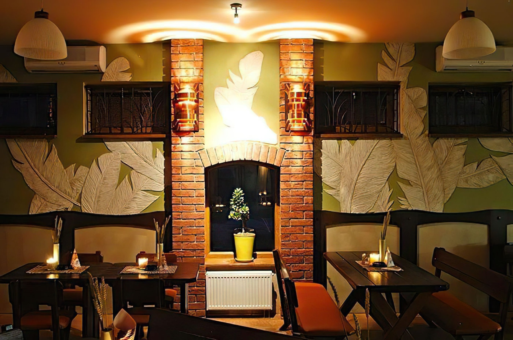

Od prvního projektu v roce 1996 po dnešní realizace v rezidencích, hotelech a komerčních interiérech. Historie Wall Decor Art je hlavně o řemeslném vývoji, ne o sbírání zemí na mapě.
Studio vzniká v Brně. První zakázky jsou skromné, vápenné malby v privátních bytech a drobné dekorativní práce. Už tehdy je ale jasné, že nejde jen o nátěr, ale o promyšlenou práci s atmosférou prostoru.

Studio rozšiřuje působnost do Prahy. Přicházejí první zakázky pro kavárny a restaurace a zároveň první intenzivnější kontakt s italskými technikami dekorativních stěrek.
Marek absolvuje intenzivní kurzy marmorino a stucco veneziano u italských mistrů ve Veroně. Dekorativní malba a limewash se v této době stávají pevnou součástí nabídky studia.
Klíčový mezník, realizace dekorativních omítek a zlacení v budapešťském hotelu Andrássy (Relais & Châteaux). Důležité nebylo místo na mapě, ale to, že studio zvládlo technicky i organizačně náročnou hotelovou zakázku.

Komplexní realizace v toskánském sídle — limewash, malby a dekorativní štuky v historické vilové rezidenci. Projekt trvá čtyři měsíce a stává se jednou z nejnáročnějších a nejprestižnějších zakázek do té doby.
Série realizací v Nizozemí, privátní rezidence v Haagu a restaurování historických interiérů v Naarden-Bussum. Přibývá zkušenost s koordinací složitějších rekonstrukcí a historických objektů.
Rodinný dům v Grazu s komplexní realizací včetně microcementu, malby a zlacení detailů. Současně první zakázka pro vídeňský boutique hotel — lobby s velkoformátovou freskovou malbou.

Studio zavádí microcement jako plnohodnotnou součást nabídky. Technika rychle získává na popularitě — zejména pro koupelny a kuchyně v moderních privátních interiérech. Počet zakázek roste o 40 % během dvou let.
Dnes Wall Decor Art vede Marek Hospodářský se sítí ověřených spolupracovníků. Důraz zůstává stejný: osobní odpovědnost za návrh, technologii i finální výsledek každé zakázky.
